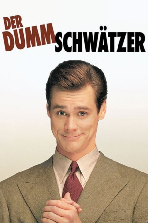
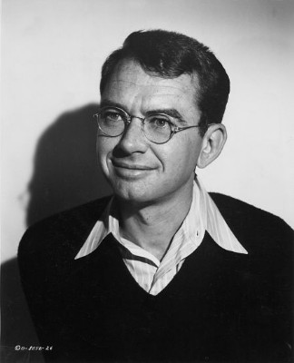

#4163 Der Dummschwätzer
Alternativ: Liar Liar
 
 IMDB-Wertung: 6.8 / 10
IMDB-Wertung: 6.8 / 10  Metascore: 0
Metascore: 0 
Fletcher Reede (Jim Carrey) ist Anwalt, unzuverlässig und er lügt, dass sich die Balken biegen. Sein Sohn Max (Justin Cooper), der bei Fletchers Ex-Frau Audrey (Maura Tierney) lebt und von Fletcher schon oft enttäuscht wurde, entlockt seinem Vater jedoch ein großes Versprechen: Fletcher soll 24 Stunden nicht lügen. Leichtfertig willigt Fletcher ein und hat noch keine Vorstellung davon, was der Wunsch seines Sohnes mit sich bringen könnte. Das Versprechen hat Konsequenzen – privat und beruflich – denn selbst die simpelsten Höflichkeitsfloskeln gehen Fletcher nun nicht mehr über die Lippen. Als Fletcher dann auch noch erfährt, dass Audrey, ihr neuer Liebhaber und Sohn Max in eine andere Stadt ziehen wollen, muss Fletcher alles geben. Und ganz nebenbei muss Fletcher lernen, dass es manchmal gar nicht so verkehrt ist, bei der Wahrheit zu bleiben.
Jahr: 1997
Dauer: 86 Minuten
FSK: 6
Land: USA Studio: MCA/Universal PicturesTonspuren: DTS - ,
Untertitel: Deutsch,
Auflösung: 1080p (1920x1040) Größe: 8591 MB
Genre: Komödie, Fantasy
Regisseur: Tom Shadyac
Drehbuch: Peter Moffat
Soundtrack:
Darsteller:
 Jim Carrey als Fletcher Reede
Jim Carrey als Fletcher Reede Maura Tierney als Audrey Reede
Maura Tierney als Audrey Reede- Justin Cooper als Max Reede
 Cary Elwes als Jerry
Cary Elwes als Jerry- Anne Haney als Greta
 Jennifer Tilly als Samantha Cole
Jennifer Tilly als Samantha Cole- Amanda Donohoe als Miranda
 Swoosie Kurtz als Dana Appleton
Swoosie Kurtz als Dana Appleton Mitchell Ryan als Mr. Allan
Mitchell Ryan als Mr. Allan- Christopher Mayer als Kenneth Falk
- Eric Pierpoint als Richard Cole
 Randall 'Tex' Cobb als Skull
Randall 'Tex' Cobb als Skull- Cheri Oteri als Jane
- Jarrad Paul als Zit Boy
 Marianne Muellerleile als Ms. Berry - Teacher
Marianne Muellerleile als Ms. Berry - Teacher- Krista Allen als Lady in Elevator
-  Don Keefer als Beggar at Courthouse
 Randy Oglesby als Detective Bryson
Randy Oglesby als Detective Bryson Charlie Dell als Restroom Man
Charlie Dell als Restroom Man- Jim Jansen als Pilot
 Terry Rhoads als Co-Pilot
Terry Rhoads als Co-Pilot- Ed Trotta als Mechanic
- Tony Carreiro als Cop
- Amanda Carlin als Publicist
- Eric Sharp als Sharpo the Clown
- Christine Avila als Lupe
- Hope Allen als Playground Teacher
- Carrie Armstrong als Stenographer
- Craig Barnett als Deputy
- Charles Emmett als Macho Attorney
 Steven M. Gagnon als Jail Guard , credit only
Steven M. Gagnon als Jail Guard , credit only- Rick Hill als Jail Guard
- Mike Grief als Driver
- Matthew Arkin als Colleague
- Dennis Napolitano als Piano Player
- Michael Adler als Conference Room Attorney
 Vitamin C als Conference Room Attorney
Vitamin C als Conference Room Attorney- Benjamin Brown als Conference Room Attorney
- Sue Goodman als Conference Room Attorney
- Mark Chaet als Conference Room Attorney
 Michael Kostroff als Conference Room Attorney
Michael Kostroff als Conference Room Attorney- Howard S. Miller als Conference Room Attorney
- Ashley Monique Clark als Child at Party and School
 Sara Paxton als Child at Party and School
Sara Paxton als Child at Party and School Greg Bronson als Courtroom Attendee , uncredited
Greg Bronson als Courtroom Attendee , uncredited- Mark Anthony Cox als Marshaller , uncredited
- Roger Ferreira als Passenger , uncredited
- Jill Gable als Airline Passenger , uncredited
 Jason Bernard als Judge Marshall Stevens
Jason Bernard als Judge Marshall Stevens- SW Fisher als Pete
Datei: X:\1997\Dummschwätzer, Der (1997, FSK6, 1920x1040).mkv seit 27.07.2016
Festplatte: HD 1996-2002
 Es gibt insgesamt 83 Filme in der Gruppe '1997'
Es gibt insgesamt 83 Filme in der Gruppe '1997'